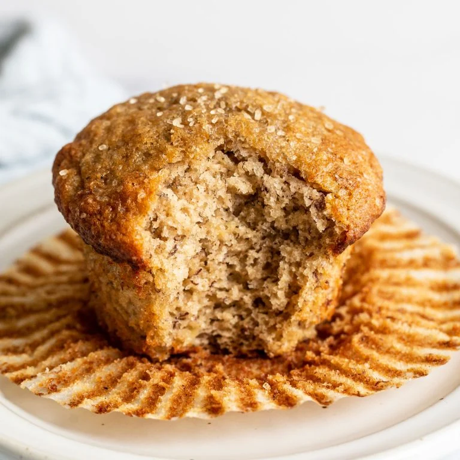

Banana Muffins

Description
Delicious moist banana muffins that will surely have you coming back for more.
Follow this simple recipe for the best banana muffins of your life!
Ingredients
- 1 1/2 cups plus 2 tablespoons (205 grams) bread flour
- 1 tablespoon baking powder
- 1/2 teaspoon baking soda
- 1/2 teaspoon fine salt
- 3/4 teaspoon ground cinnamon, optional
- 1/4 teaspoon ground nutmeg, optional
- 1 1/2 mashed, very ripe bananas (about 3 large bananas)
- 1/2 cup granulated sugar
- 1/4 light brown sugar
- 2 tablespoons unsalted butter, melted and cooled
- 1/4 cup vegetable or canola oil
- 2 large eggs
- 1 teaspoon vanilla extract
- OPTIONAL: 3/4 cup walnut halves or pecans, toasted and chopped OR 1 cup chocolate chips
- Course sugar, for garnish if desired
Steps
- Preheat the oven to 425°F. Position an oven rack to the middle or upper middle position. Line a standard muffin tin with paper liners.
- In a large bowl, whisk together the flour, baking powder, baking soda, salt, and spices if using.
- In a medium bowl, whisk together the bananas, sugars, butter, oil, eggs, and vanilla until well combined. Pour into the dry ingredients and stir until just barely combined. Stir in the nuts or chocolate chips, if using.
- Divide evenly among the muffin tin cups, filling each 3/4 full for large muffins. You can also make about 15 smaller muffins by filling the cavities of two pans just 2/3 full. Sprinkle each with a generous amount of coarse sugar for a crunchy shiny topping, if desired.
- Bake until golden brown and a toothpick inserted in the center comes out clean, about 14 to 15 minutes. Let cool in muffin pan for 5 to 10 minutes before removing to wire rack. Serve warm or at room temperature.
- Store in an airtight container for up to 3 days.